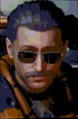
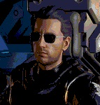
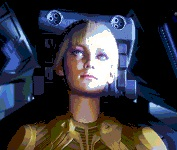
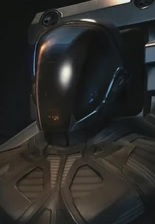
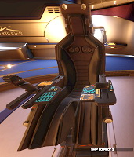
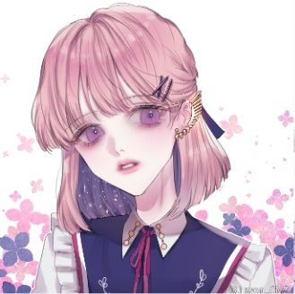

Crew Member N°1: Colonel Urmanthros (Urmand) De Ivellón
Commander of the Tiefe Erfahrung Circze.
Colonel, captain, mechanic, and owner of the vessel.
Veteran of two wars, three tours of duty, and nineteen secret operations — with vast experience as a privateer pilot.
He earned the title of "Gundam Wrecker" after shooting down one Gundam-like robot and severely damaging another.
Commander De Ivellón owns and maintains a small fleet of multipurpose spacecraft, always ready to fly — proving his passion and seriousness about spaceflight.
Your safety is assured under the command of Colonel De Ivellón.

Crew n°2: Second Commander Naerssé De Ivellón
The stewardress of the vessel and second in command of the Tiefe Erfahrung Circze, little sister of Urmanthros.
She is a retired military police of the first war, now an element of Circze's Mission.
Member of the Pilot's Federation, she has her own ships (a Mandalay, an Eagle MkII and a Krait Phantom), less experienced but directly instructed by Commander Urmanthros.

Crew Member N°3: Tae-Yang Namgun (남궁 태얀)
Fresh member of the Pilot’s Federation, currently undergoing his first operation in full crew mode.
Empire citizen of noble descent, with a forgotten family name.
Chosen by the Captain for his resilience and focus under heavy pressure.

Crew n°4: vacant-visiting passenger

Chef: Geum-Hee Seong (금희成)
Chef and occasional maid aboard the ship. Of Korean origin, personally recommended by Tae-Yang Namgung.
Her dishes have been tested by Commander Naerssé and approved by Commander Urmanthros.
Another imperial citizen with a noble lineage long forgotten.